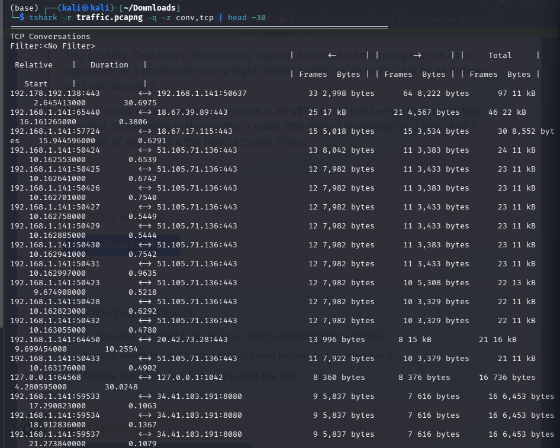
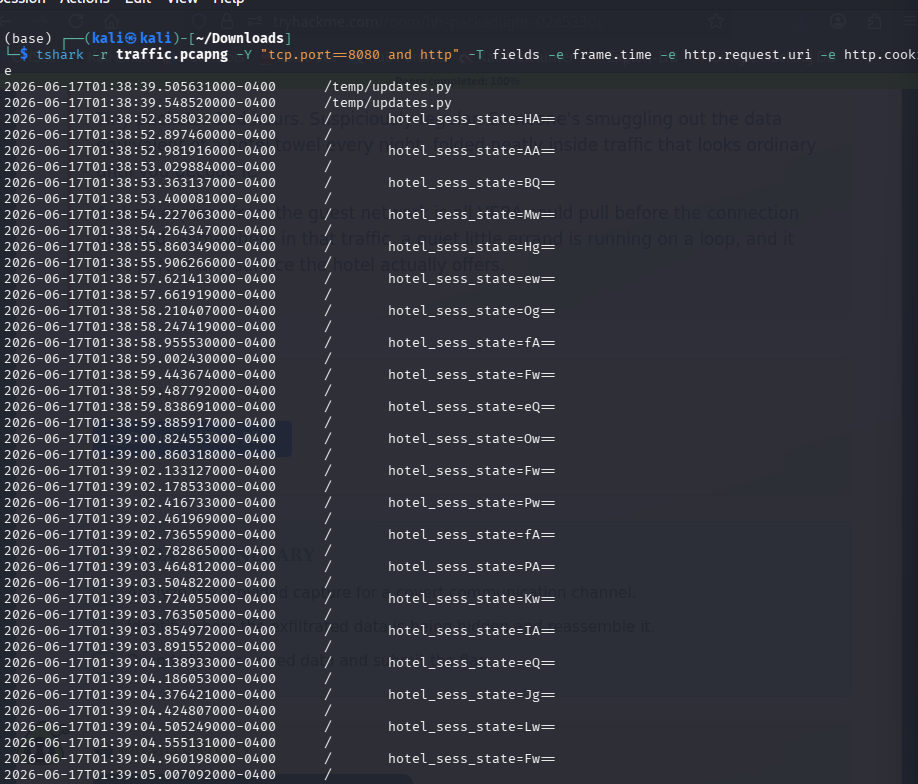
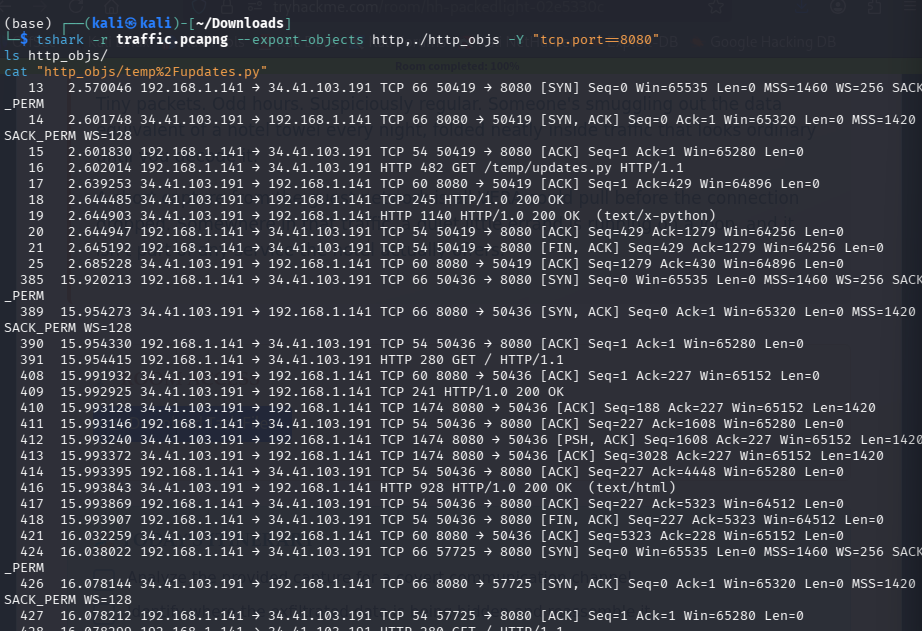
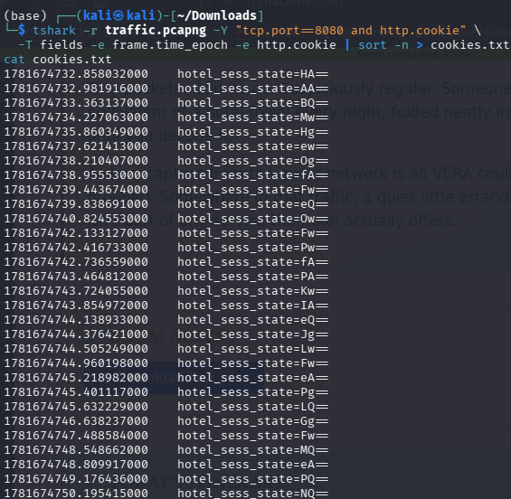
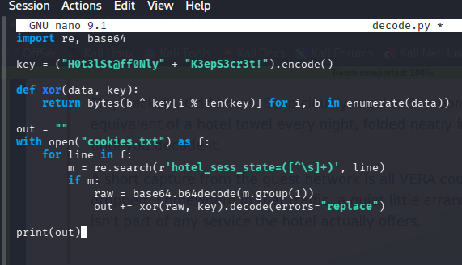
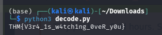

Challenge Summary
The challenge provides a short PCAP capture (traffic.pcapng) from a hotel guest network.
A hint from "@0xMia" describes a laptop pinging some :8080 address every second with weird headers and "crypto" involved.
The goal is to find a covert exfiltration channel, reassemble the hidden data, decode it, and recover the flag.
Step 1: Initial Recon
Opened the capture and checked TCP conversations to spot anything unusual:
tshark -r traffic.pcapng -q -z conv,tcp | head -30
Most traffic was ordinary HTTPS (port 443). But there was a large number of short, repeating connections to port 8080; abnormal compared to the rest of the traffic and matching @0xMia's "pinging every second" complaint.

Step 2 : Isolating Port 8080 Traffic
Filtered specifically for HTTP traffic on port 8080:
tshark -r traffic.pcapng -Y "tcp.port==8080 and http" -T fields -e frame.time -e http.request.uri -e http.cookie
This revealed two things:
- A single request for GET /temp/updates.py
- A flood of repeated GET / requests, each carrying a Cookie: hotel_sess_state=<base64> header; a different value every time.

Step 3:Recovering the Malware Source
Since /temp/updates.py was served in plaintext over HTTP, exported it directly from the capture:
tshark -r traffic.pcapng --export-objects http,./http_objs -Y "tcp.port==8080"
ls http_objs/ cat "http_objs/temp% 2Fupdates.py "

The script is a keylogger built with pynput. For every keystroke:
- It XORs the character against the key "H0t3lSt@ff0Nly" + "K3epS3cr3t!"
- Base64-encodes the result
- Sends it to the C2 server (byte-lotus-hotel.thm:8080) inside the Cookie: hotel_sess_state=<base64> header of a GET / request
This explains @0xMia's observations: the constant pinging (one keystroke = one request) and the "crypto" (the XOR + base64 encoding scheme).
Step 4: Extracting the Exfiltrated Cookies in Order
Since each request carries exactly one XOR/base64-encoded character, pulled every cookie value in chronological order:
tshark -r traffic.pcapng -Y "tcp.port==8080 and http.cookie" \
-T fields -e frame.time_epoch -e http.cookie | sort -n > cookies.txt
cat cookies.txt

Step 5 : Decoding the Data
Wrote a small Python script to reverse the encoding scheme found in updates.py:

Ran it:
python3 decode.py

Output:
THM{xxxxxxxx}Lessons
- Anomalous, regular traffic on a non-standard port is a classic sign of a beaconing C2 channel.
- Data exfiltration doesn't have to live in the request body; HTTP headers (here, the Cookie header) are a common covert channel because they're often overlooked.
- Recovering the malware's own source code from the capture was the key to breaking the "crypto"; the XOR key was hardcoded in the script.
- Order matters: each request carried one character, so requests had to be reassembled by timestamp before decoding.